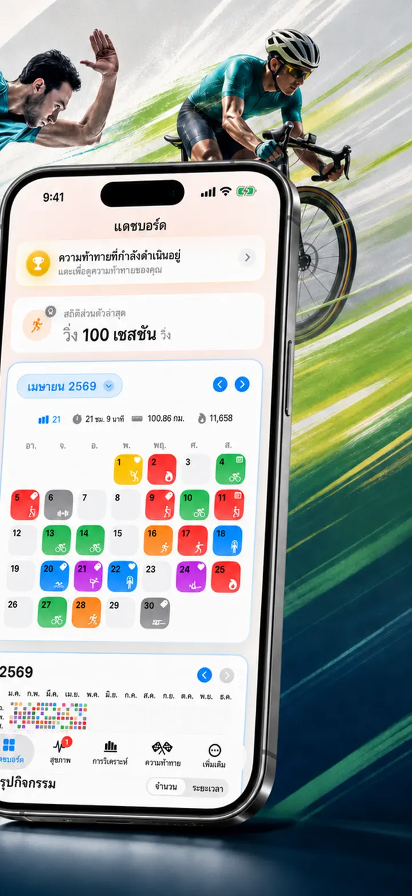
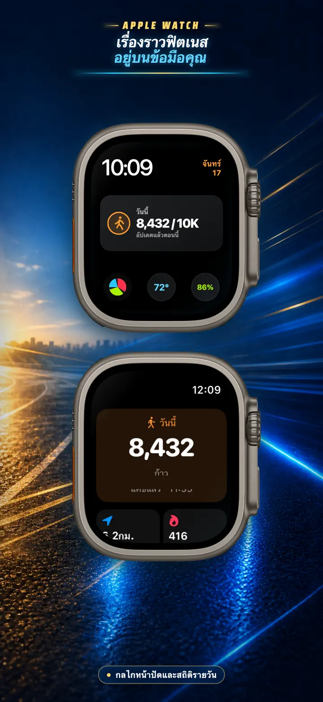
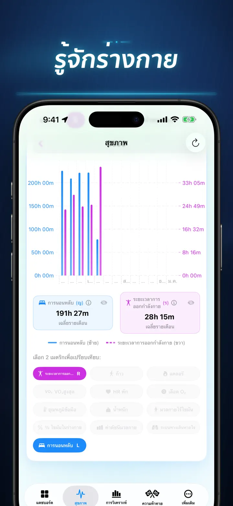
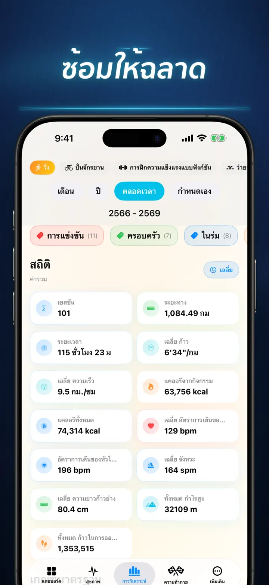
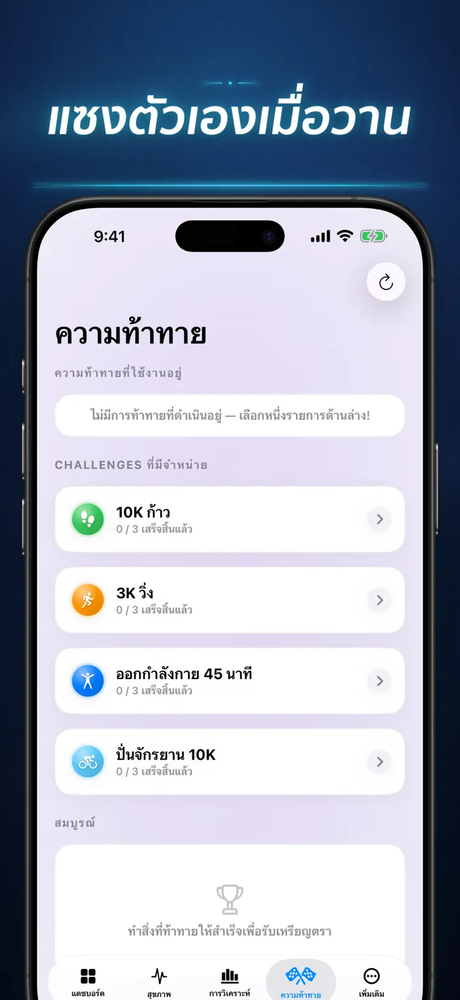
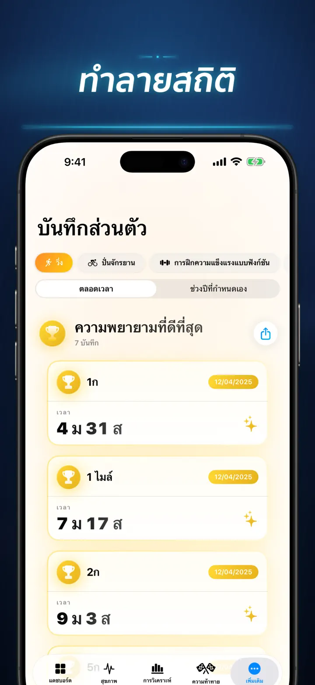
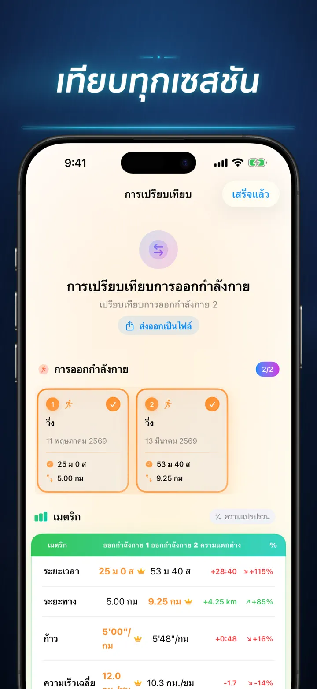
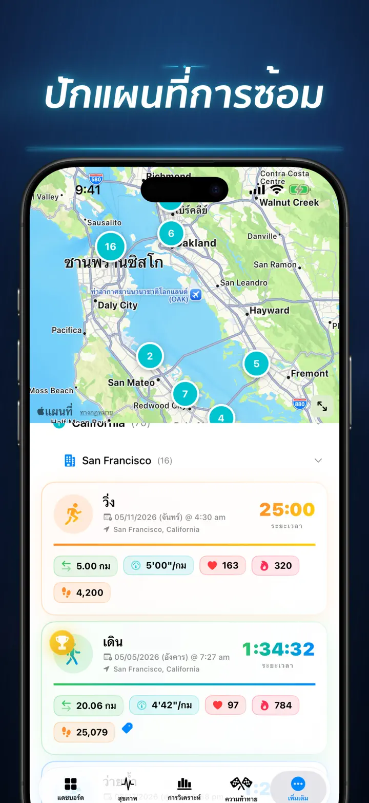
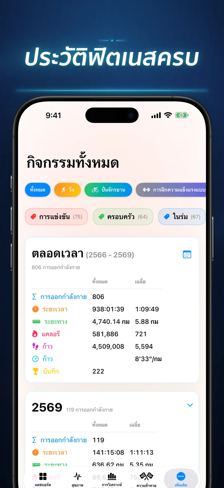

เรื่องราวฟิตเนส
อินไซต์เวิร์กเอาต์และชาเลนจ์
มาแล้วบน Apple Watch: ดูจำนวนก้าววันนี้ได้ทุกหน้าปัด พร้อมหน้าจอ “วันนี้” ที่มีระยะทาง แคลอรี และจำนวนชั้น — ตรงจาก Apple Health
ดาวน์โหลดจาก App Storeเกี่ยวกับแอป
เลิกเดา แล้วเริ่มเข้าใจจริง ๆ เรื่องราวฟิตเนสเปลี่ยนข้อมูล Apple Health ของคุณให้เป็นแดชบอร์ดวิเคราะห์การออกกำลังกายและสุขภาพที่ละเอียดบน iOS ไม่ต้องมีบัญชี ไม่มีเซิร์ฟเวอร์ลับ มีแค่เส้นทางฟิตเนสของคุณที่ถูกเล่าเป็นภาพ
ไม่ว่าคุณจะตามดูระยะการนอน วิเคราะห์ cadence ตอนวิ่ง หรือไล่ล่าสถิติใหม่ในมาราธอน แอปนี้คือศูนย์รวมข้อมูลที่คู่ควรกับความพยายามของคุณ
ใช้งานได้กับทุกอุปกรณ์และแอปที่ซิงค์กับ Apple Health — Apple Watch, Garmin, Polar, Suunto, Zwift และอื่น ๆ
วิเคราะห์แบบจริงจัง
- กราฟเทรนด์และ benchmark: ดู median, quartile และ outlier ของกีฬาแต่ละประเภท
- ตัวกรองละเอียด: ค้นประวัติตามช่วงเวลา ระยะทาง ระยะเวลา pace ความสูง cadence และความยาวก้าว
- จัดอันดับทันที: เทียบระยะทาง pace อัตราการเต้นหัวใจ และเมตริกวันนี้กับประวัติทั้งหมด เพื่อรู้ทันทีว่าคุณทำผลงาน Top 15% หรือไม่
- Contribution Graph: heatmap สไตล์ GitHub สำหรับประวัติการออกกำลังกายทั้งหมด แตะดูสถิติรายวันได้ลึกขึ้น
รายละเอียดเวิร์กเอาต์ที่มากกว่าเดิม
- แผนที่อัจฉริยะ: ใส่สีให้เส้นทางกลางแจ้งตามความเร็ว ความสูง หรือโซนอัตราการเต้นหัวใจ รวมการแก้ตำแหน่งแผนที่จีน
- วิเคราะห์ split เชิงลึก: ดู split แบบกิโลเมตรหรือไมล์ พร้อม pace ความสูง หัวใจ และ cadence ในแต่ละรอบ
- โซนหัวใจ: เห็นเวลาที่อยู่ในโซน 1-5 ตามอายุและอัตราการเต้นหัวใจขณะพัก
- บันทึกบริบทครบ: เพิ่มรูปภาพ โน้ตแบบ rich text คะแนนความหนัก 1-10 และแท็กของคุณเอง
ศูนย์ข้อมูลสุขภาพครบในที่เดียว
- ทุกอย่างที่ Apple Watch วัดได้ แสดงเป็นเทรนด์รายวัน รายสัปดาห์ และรายปี
- หัวใจและความฟิต: อัตราการเต้นหัวใจขณะพัก, VO2 Max, ออกซิเจนในเลือด และอัตราการหายใจ
- องค์ประกอบร่างกาย: น้ำหนัก เปอร์เซ็นต์ไขมัน มวลไร้ไขมัน และ BMI พร้อมสัญญาณแนวโน้ม
- กิจกรรมและการฟื้นตัว: จำนวนก้าวรายชั่วโมง แคลอรี่ active/basal และความเปลี่ยนแปลงของอุณหภูมิข้อมือ
- การนอนขั้นสูง: Deep, Core, REM และช่วงตื่น แสดงทีละคืน
- Overlay ความสัมพันธ์: ซ้อนเมตริกสุขภาพหลายตัวเพื่อดูว่านอนส่งผลต่อหัวใจอย่างไร หรือน้ำหนักกระทบ VO2 Max แค่ไหน
เปรียบเทียบและท้าทายตัวเอง
- เลือกเวิร์กเอาต์ได้สูงสุด 10 ครั้งเพื่อเทียบแบบเคียงข้างกัน
- ส่งออกข้อมูลเปรียบเทียบไปวิเคราะห์ต่อได้
- ติดตามสถิติส่วนตัวอัตโนมัติสำหรับ 1K, 5K, 10K, ฮาล์ฟมาราธอน, มาราธอน และระยะที่กำหนดเอง
- Story Timeline รวม milestone สถิติ และเวิร์กเอาต์ทั้งหมดตามเวลา
ข้อมูลของคุณ ไปได้ทุกที่
- แผนที่โลก: ดูทุกสถานที่ที่คุณเคยออกกำลังกายบนแผนที่แบบโต้ตอบ
- Export ทรงพลัง: ส่งออกประวัติทั้งหมดหรือช่วงที่เลือกเป็น CSV หรือ JSON พร้อม split, เมตริกร่างกาย และ metadata
- iCloud Sync: รายการโปรด แท็ก โน้ต และคะแนน sync ทุกอุปกรณ์
- Privacy First: ข้อมูลของคุณอยู่กับคุณ
เหงื่อของคุณมีเรื่องเล่า ถึงเวลาอ่านมันแล้ว ดาวน์โหลดเรื่องราวฟิตเนสวันนี้
Privacy Policy: https://masawata.net/privacy-policy.html Terms Of Service: https://www.apple.com/legal/internet-services/itunes/dev/stdeula/
ภาพหน้าจอ









เรื่องราวฟิตเนส
มาแล้วบน Apple Watch: ดูจำนวนก้าววันนี้ได้ทุกหน้าปัด พร้อมหน้าจอ “วันนี้” ที่มีระยะทาง แคลอรี และจำนวนชั้น — ตรงจาก Apple Health
ดาวน์โหลดจาก App Store